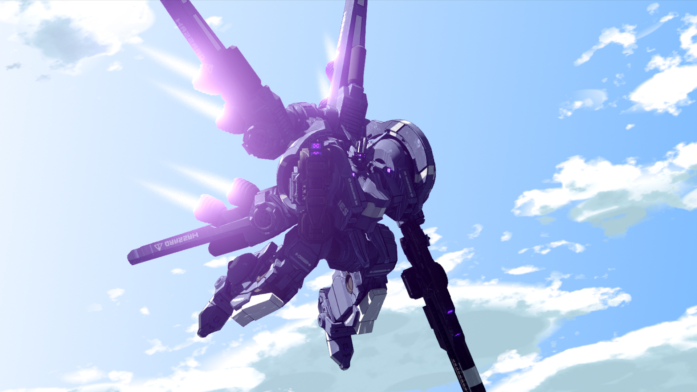
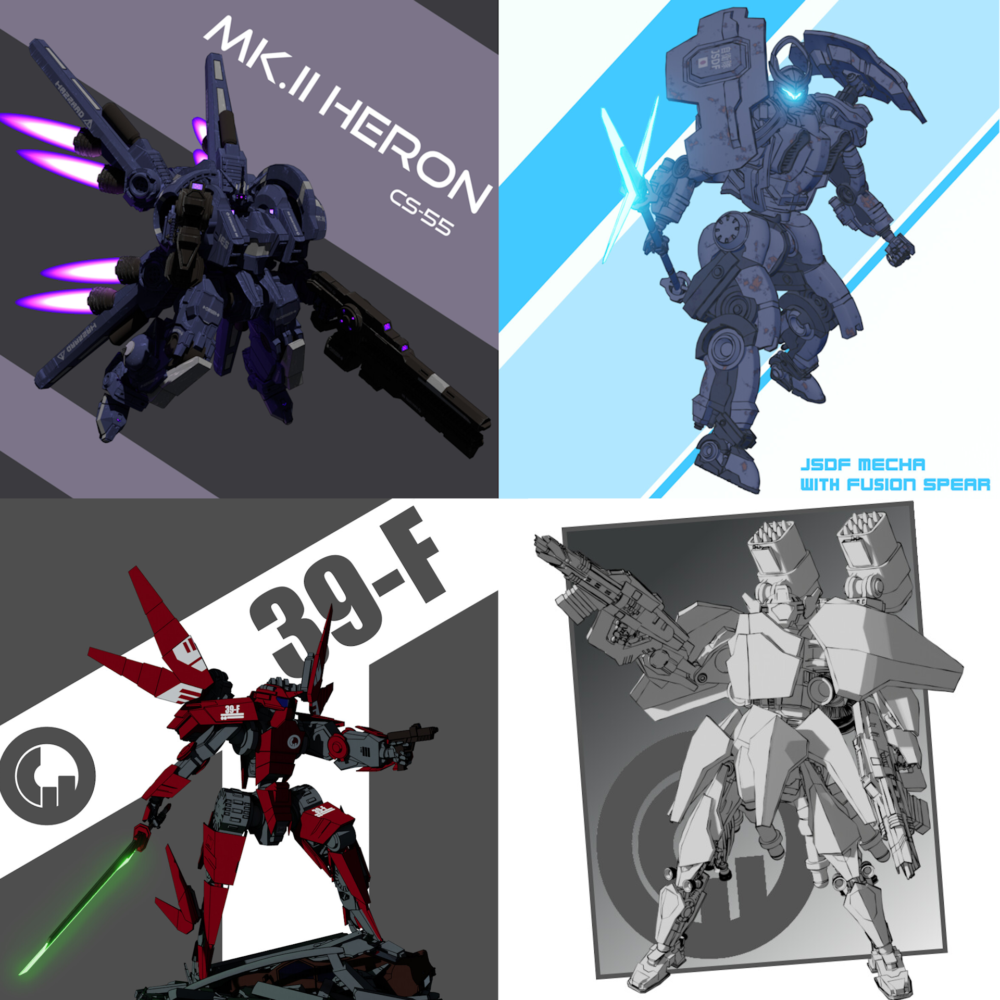

I also created a render of the mech in flight, depicted soaring through the sky.
The environment features a custom sky shader, which I projected onto a dome within Blender 4.3 to provide a stylized atmospheric backdrop.
While the majority of the image was developed entirely in Blender, I performed additional post-processing using external image editing software to enhance the final composition.
To further refine the visual style and emphasize the model’s silhouette and form, I utilized Blender’s Freestyle line art tool, which added a clean illustrative touch to the renders
This mech is part of a larger collection of original designs I’ve developed in my spare time to refine my skills in 3D modeling, visual effects, and overall asset development.
